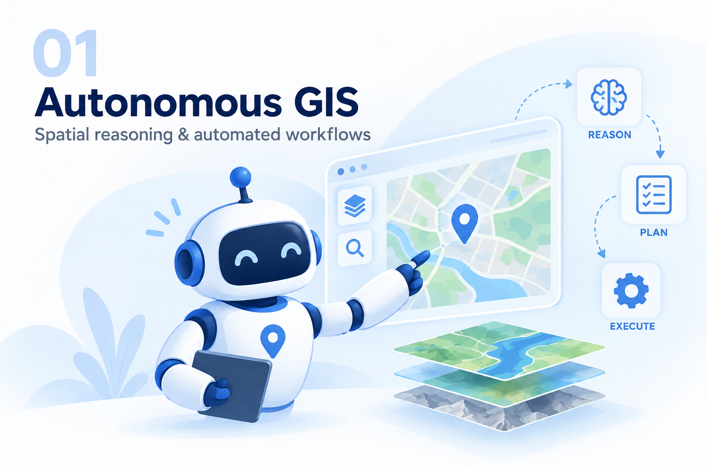
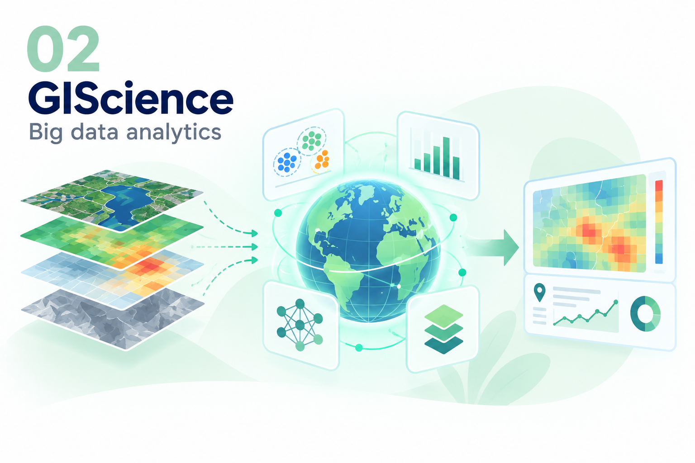
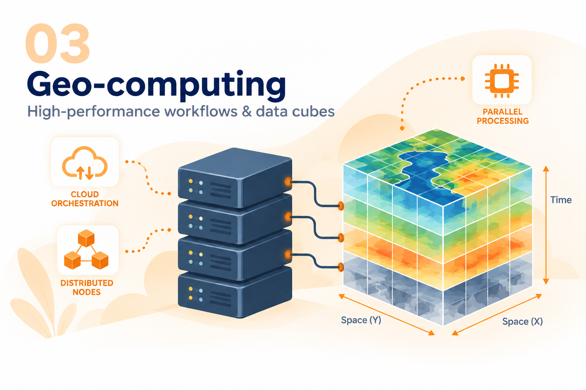
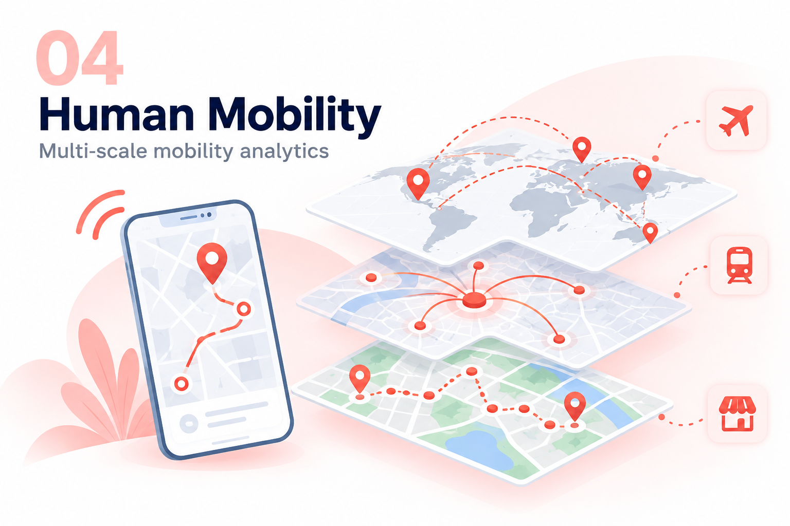
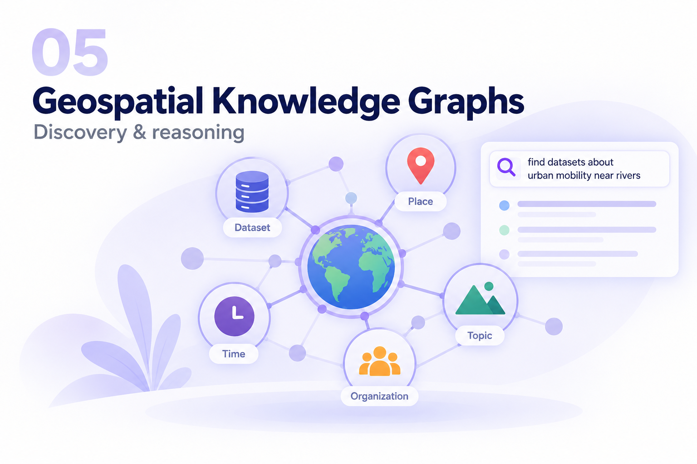
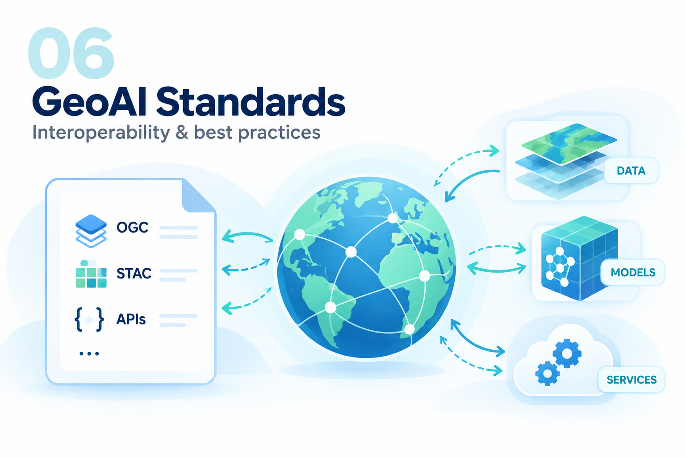

01 / AUTONOMOUS GIS
Autonomous GIS & Spatial Reasoning
Agentic systems that interpret geospatial tasks, reason over space, and support automated GIS workflows.
Themes spanning Autonomous GIS, spatial reasoning, geospatial big data, and human mobility.

Agentic systems that interpret geospatial tasks, reason over space, and support automated GIS workflows.

Methods and infrastructures for analyzing large, heterogeneous geospatial datasets at scale.

Parallel and distributed computing to accelerate spatial analysis and geospatial data-cube workflows.

Spatial analytics of movement patterns and mobility behavior across places and scales.

Semantic representations that connect geospatial entities, concepts, and relations for discovery and reasoning.

Interoperability standards and best practices that support geospatial artificial intelligence and machine learning.